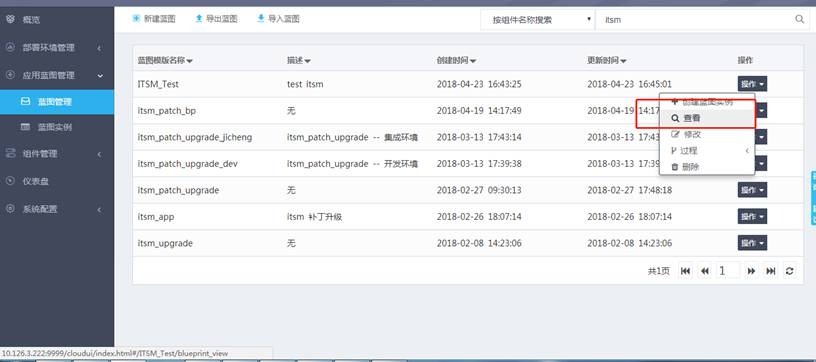
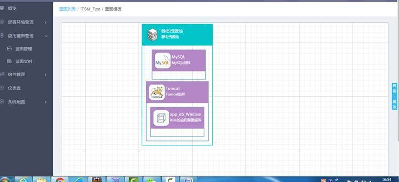
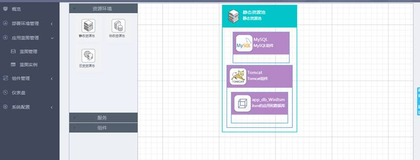
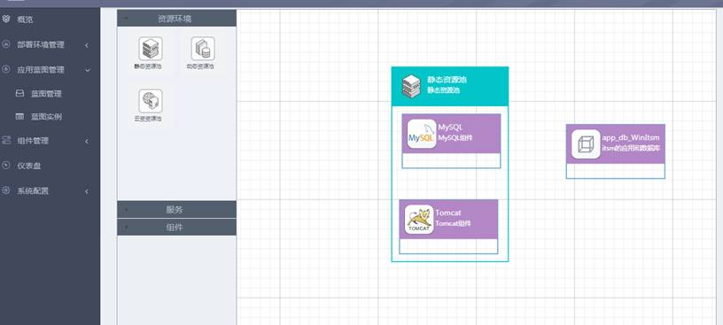
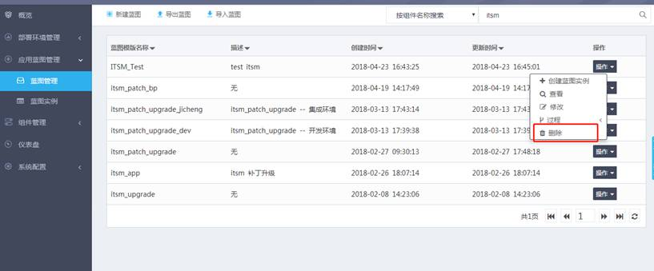

“应用蓝图管理”-->“蓝图管理”-->“操作”-->“查看”，如下图所示。

可以查看到当前模板的拓扑结构，如下图所示。查看的时候是不可对蓝图进行编辑的。

“应用蓝图管理”-->“蓝图管理”-->“操作”--> “修改”，如下图所示。

编辑的时候，左侧的资源池和组件均是可以拖拽的，之前已经绘制好的蓝图也是可以拖拽编辑的。编辑完成之后，点击下方的“更新蓝图”按钮即可。如下图所示。

点击“查看蓝图数据”，可以查看下面的json报文数据。如果修改了下面的json报文，点击“载入蓝图数据”可以重新载入报文数据对应的蓝图拓扑。
“应用蓝图管理”-->“蓝图管理”-->“操作”--> “删除”，如下图所示。可以删除蓝图模板。
